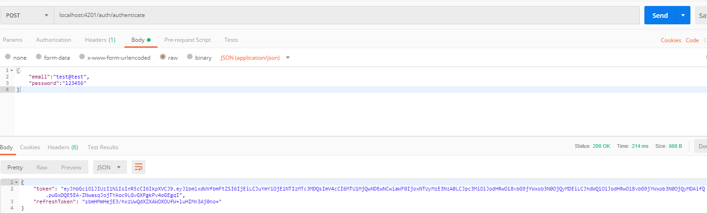
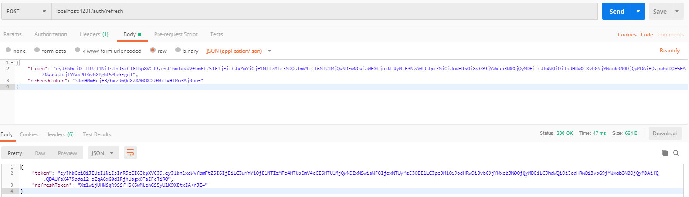
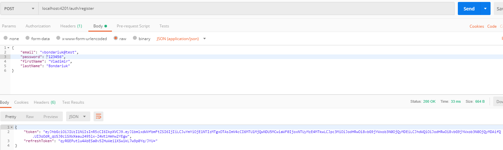

Create your own conference system
The main goal of this article is to show how you can create you own conference system. This system will allow us to chat and Audio/Video calls.
The source you can find here: https://github.com/vbondaryuk/ConferenceSystem
For creating our system we will use follow technologies. Asp.Net Core 2.2 and Angular 7, for real-time communication we will use SignalR, for supporting Audio/Video calls WebRTC, for authentication between them JWT.
Since article will have a lot piece of codes I decided to split it to following parts
- Creating simple chat via SignalR
- Create and configure Asp .Net Core Web application
- Add simple chat implementation
- Create Angular application
- Add JWT authentication
- Add possibilities to use calls via WebRTC;
Creating simple chat via SignalR
Simple demo how it will looks like
First of all we should think about project's folder structure. I will show you my view to it:
- ConferenceSystem
- src
- ConferenceSystem.Api
- ConferenceSystem-Angular
- ConferenceSystem-React(it was not of this article, but who knows me be in the future)
- tests
- src
Create and configure Asp .Net Core Web application
Lets start from creating .Net Core Web application. It is very easy just follow steps bellow.
- Open Visual Studio
- Create new project and call it ConferenceSystem.Api
- Web\Asp .net core web application
- Type the name of our system: ConferenceSystem.Api. Don't forget follow the structure I mentioned above
- Choose net core 2.2 and empty application, with No Authentication
After this steps empty application will be created by Visual Studio
.Net Core and JWT Authentication
For supporting JWT authentication in .Net Core, we should modify Startup class. But
firstly we need to add configuration to appsettings.json
Code explanation
SecurityKey- this key need to encrypt you JWTIssuer- is the server that create the tokenAudience- token receipt- Last two fields it is an expiration time
For simplifying to work with this setting lets add JWTSettings class.
Lets take a look Startup class and ConfigureServices method
Here you can see how we extract JWT configuration section and deserialize it to JwtSettings
class.
Then we add Authentication and JwtBearer services. In
JwtBearer we configure TokenValidationParameters
accordingly configuration from appsettings.json add AuthenticationFailed
'interceptor' where we validate is exception SecurityTokenExpiredException
then add Token-Expired header. Token-Expired header allow us to add possibilities to token refresh
support.
Since we will use external clients and clients will have other IP addresses we should configure
CORS policy.
From
MSDN:
Using CORS, a server can explicitly allow some cross-origin requests while rejecting others.
For turn on our modification we should add Authentication and CORS
middleware
Excellent, we have configured our application for supporting JWT authentication, so lets dive more deeply and implement infrastructure for Authentication.
Add secure Api endpoint
I won't to use default UserManager for implementing authentication managing it is not
interesting, more exciting to create it from scratch,
probably it won't have all possibilities, but for our system, its more than enough.
For working with authenticated user we add Userclass
Then for handling users we need to add service UserService this service will responsible
for creating users, validating password and etc.
Code explanation
In current step we won't to add data base support and will use List for keeping users. CreateUserDto
just DTO for creating a user.
Pay attention to CreateSalt and CreatePassword methods.
As you can see every user has its own salt and we should not keep 'clean' password we should keep
password's hash
On the next step we need to add some classes and TokenService this service will
accountable to create JWT tokens.
Firstly take a look across the code and bellow you will find explanation
Code explanation
JwtToken- represents simple class for transferring to clientJwtRefreshToken- keeps some information for validating refresh token. This class will be kept inside DataBase/InMemoryDataBase, for client should be send only refresh token valueTokenService- are further explanation bellow
Well, lets take a look by methods. CreateToken this method creates JWT token and add
UserId to Claims.
We can extract it from JWT (method: GetUserIdFromExpiredToken)
for some reason like authorization or use it due to refreshing token stage. Next method GenerateRefreshToken
uses for creating JwtRefreshToken
Method GetUserIdFromExpiredToken this method we can split for two parts: first part -
here we validate is token valid or not.
This code pretty much the same as validation in Startup class except for expire date validation. If
token valid we extract ClaimPrincipals than find UserId.
AddRefreshTokenAsync and GetRefreshTokenAsync here we add and extract
refresh token from storage.
Add the AuthenticationManager class. This class accountable for authentication like a
facade combines IUserService and ITokenService
You can see here when token refreshed AuthenticationManager extract UserId then validate
is tuple of <UserId, RefreshToken>
exists and refresh token is not expired AuthenticationManager generate newJwtToken.
Other interesting method is GetCurrentUser.
This method is used for retrieving user from request, for doing that we should add IHttpContextAccessor
to constructor.
One of the last we need to add the AuthenticationController
AuthenticationController does not catch any exceptions, does not response correct
exception texts, but it is example project and it is the only first part,
in the future, we will fix it.
Last but not least we need to add our dependencies to DI container in Startup.
in the ent of configureService add the following rows:
services.AddScoped<IAuthenticationManager, AuthenticationManager>();
services.AddScoped<ITokenService, TokenService>();
services.AddScoped<IUserService, UserService>();
services.AddHttpContextAccessor();
Lets validate how does it work.
-
Authenticate
 -
Refresh token
 -
Register

Excellent, we have finished with authentication. So we can add SignalR support
Add simple chat implementation
Firstly we need to create class which will be inherited from Hub
Code explanation
[Authorize(AuthenticationSchemes = JwtBearerDefaults.AuthenticationScheme)]- here we specified access only for authorized users.ConnectedClients- dictionary where we will keep all connected users, it can be replaced for DataBase for example. This dictionary contains connection ids via user since one user can cbe connected with different devices.SendMessage- this method are responsible for communication between clients, will will call this method for send message to recipients.RequestConnectedClients- this method response to caller only, and return all connected users.OnConnectedAsync- this standard method is fired when someone connected to the conference hub. When someone connected to we pup this connection id to the dictionary. Then callOnConnectedUsermethod for all connected users for notified that the user is onlineOnDisconnectedAsync- the same as above but fired when user lose connection.
For allowing this hub works we should add some changes to Startup class
In JwtBearerEvents we should add following rows
This code validate is connection to the hub and then retrieve token(which should be sent as parameter) and set this token to context.
Last few thinks, add services.AddSignalR(); to service collection and add
app.UseSignalR(routes => { routes.MapHub<ConferenceHub>("/conference"); }) to execution middleware.
In the end we will add UserController for retrieve user information.